Let us consider an interesting problem related to the discussion so far. We know that on a plane, the shortest path between two points is the straight line between them. Now, what is the shortest path between two points on the surface of a cuboid, if we are allowed to travel only along its surface? Let us imagine a hungry ant living on the surface of a cuboid. To its good fortune, there is a laddu on the surface.
Laddu (at the centre of the top face)
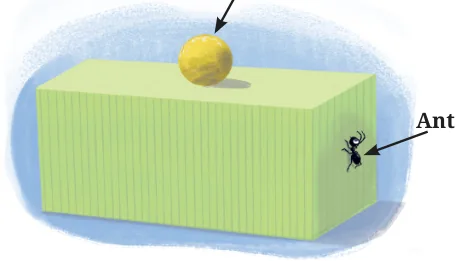
What is the shortest path for the ant to reach the laddu?
What about in the following case?
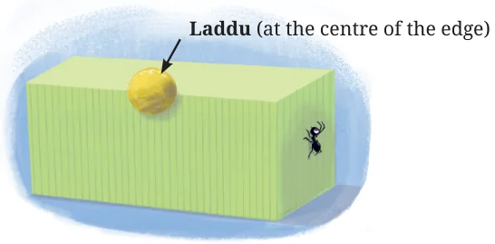
If we think that a certain path is the shortest, how can we be sure that it truly is, among all the infinite possibilities?
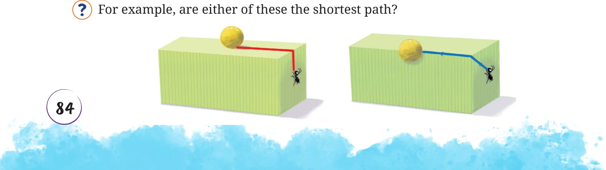

[Hint: Draw the net and see how these paths appear on the net.]
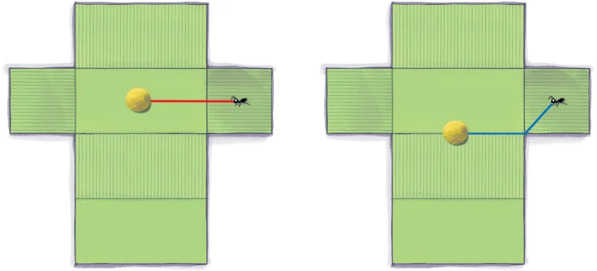
What does this show? A path on the surface of the cuboid can be transformed to a path of the same length on the net. Conversely, every path on the net transforms to a path of the same length on the cuboid. In the first case, the path marked on the cuboid is the shortest since it transforms to a straight line between the ant and laddu on the net, which is the shortest path between them. In the second case, the path marked on the cuboid does not transform to a straight line path on the net, and hence is not the shortest path for the ant to take.
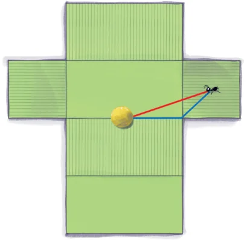
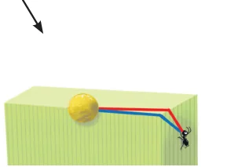
The red path is the shortest
Thus, by using a net, we convert the problem of finding the shortest path on a cuboid to the problem of finding the shortest path on the net. Have we now completely analysed the problem of finding the shortest path between two points on a cuboid?

Find the shortest path between the ant and the laddu in the following case:
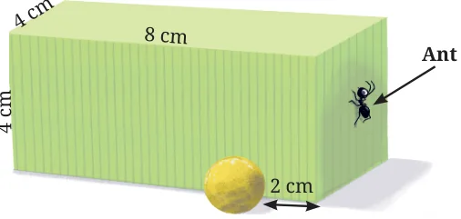
If we unfold the cuboid as before, we get
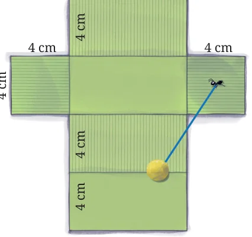
Notice the line segment between the ant and laddu going outside the net! Obviously, this does not correspond to any path on the cuboid. So what do we do now? If the net is unfolded in the following way, then we get a path on the cuboid.
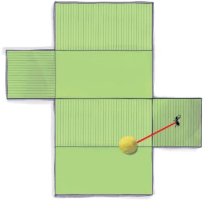
The shortest path
Thus, the way a cuboid is unfolded matters!
Now we will look at a trickier case.
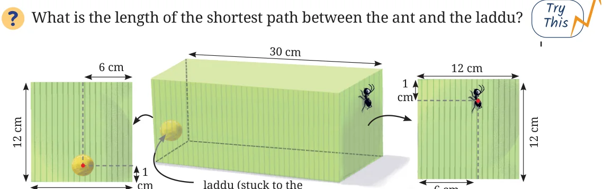
12 cm back of the box)
Here are some of the ways of unfolding the cuboid.
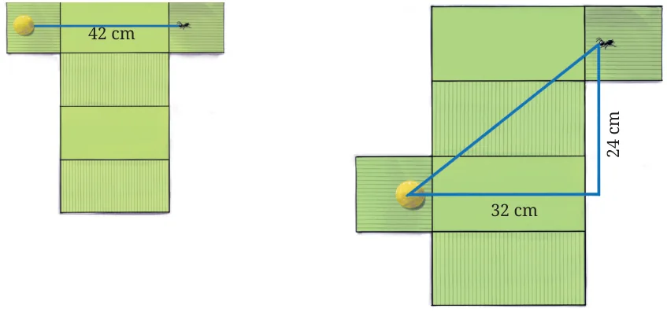
In the second case, the distance d between the ant and the laddu can be calculated using the Baudhayana Theorem, since we have a right triangle here.
\(d^2 = 24^2 + 32^2\)
\(d = \sqrt{1600} = 40\) cm
We see that in each of these unfoldings, the lengths of the line segments between the ant and the laddu are different! So we have to carefully list all the possible different unfoldings to find the answer!